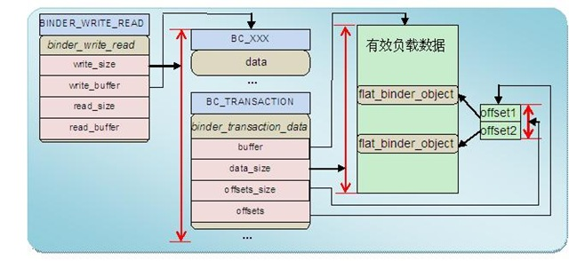

<!doctype html>
<html lang="en">
<head>
<meta charset="utf-8">
<!--<meta charset="gb2312">-->

		<title>Binder Analysis III</title>

		<meta name="description" content="A framework for easily creating beautiful presentations using HTML">
		<meta name="author" content="Hakim El Hattab">

		<meta name="apple-mobile-web-app-capable" content="yes" />
		<meta name="apple-mobile-web-app-status-bar-style" content="black-translucent" />

        <!--<meta name="viewport" content="width=device-width, initial-scale=1.0, maximum-scale=1.0, user-scalable=no">-->
		<meta name="viewport" content="width=device-width, initial-scale=1.0, maximum-scale=1.0, user-scalable=yes">

		<link rel="stylesheet" href="reveal/css/reveal.min.css">
		<link rel="stylesheet" href="reveal/css/theme/default.css" id="theme">

		<!-- For syntax highlighting -->
		<link rel="stylesheet" href="reveal/lib/css/zenburn.css">

		<!-- If the query includes 'print-pdf', use the PDF print sheet -->
		<script>
			document.write( '<link rel="stylesheet" href="reveal/css/print/' + ( window.location.search.match( /print-pdf/gi ) ? 'pdf' : 'paper' ) + '.css" type="text/css" media="print">' );
		</script>

		<!--[if lt IE 9]>
		<script src="lib/js/html5shiv.js"></script>
		<![endif]-->
	</head>
    <body>
        <div class="reveal">
            <div class="slides">
                <section data-markdown data-separator="===" data-vertical='---'>
                    <script type="text/template">
                       ## Binder Analysis part 3
                       ### Implements in Driver

                       lijin@routon
                    </script>
                </section>
                <section data-markdown data-separator="===" data-vertical='---'>
                    <script type="text/template">
                    ## 协议
                    基本格式是（命令+数据），使用ioctl(fd, cmd, arg)函数实现交互。命令由参数cmd承载，数据由参数arg承载，随cmd不同而不同。
                    ---
                    ### 协议:Command
                    <pre><code class="C" data-trim>
#define BINDER_WRITE_READ   		_IOWR('b', 1, struct binder_write_read)
#define	BINDER_SET_IDLE_TIMEOUT		_IOW('b', 3, int64_t)
#define	BINDER_SET_MAX_THREADS		_IOW('b', 5, size_t)
#define	BINDER_SET_IDLE_PRIORITY	_IOW('b', 6, int)
#define	BINDER_SET_CONTEXT_MGR		_IOW('b', 7, int)
#define	BINDER_THREAD_EXIT		_IOW('b', 8, int)
#define BINDER_VERSION			_IOWR('b', 9, struct binder_version)
                    </code></pre>
                    ---
                    ### 协议:Command Cont.
                    * BINDER_WRITE_READ ：该命令向Binder写入或读取数据。参数分为两段：写部分和读部分。如果write_size不为0就先将write_buffer里的数据写入Binder；如果read_size不为0再从Binder中读取数据存入read_buffer中。write_consumed和read_consumed表示操作完成时Binder驱动实际写入或读出的数据大小。
                    <pre><code class="C" data-trim>
struct binder_write_read {
	signed long	write_size;	/* bytes to write */
	signed long	write_consumed;	/* bytes consumed by driver */
	unsigned long	write_buffer;
	signed long	read_size;	/* bytes to read */
	signed long	read_consumed;	/* bytes consumed by driver */
	unsigned long	read_buffer;
};
                    </code></pre>
                    ---
                    ### 协议:Command Cont.
                    * BINDER_SET_MAX_THREADS: 该命令告知Binder驱动接收方（通常是Server端）线程池中最大的线程数。由于Client是并发向Server端发送请求的，Server端必须开辟线程池为这些并发请求提供服务。告知驱动线程池的最大值是为了让驱动发现线程数达到该值时不要再命令接收端启动新的线程。
                    ---
                    ### 协议:Command Cont.
                    * BINDER_SET_CONTEXT_MGR: 将当前进程注册为SMgr。系统中同时只能存在一个SMgr。只要当前的SMgr没有调用close()关闭Binder驱动就不能有别的进程可以成为SMgr。
                    ---
                    ### 协议:Command Cont.
                    * BINDER_THREAD_EXIT: 通知Binder驱动当前线程退出了。Binder会为所有参与Binder通信的线程建立相应的数据结构。
                    ---
                    ### 协议:Command Cont.
                    * BINDER_VERSION: 获得Binder驱动的版本号
                    ---
                    ### 协议：写操作
                    <pre><code class="C" data-trim>
enum BinderDriverCommandProtocol {
	BC_TRANSACTION = _IOW('c', 0, struct binder_transaction_data),
	BC_REPLY = _IOW('c', 1, struct binder_transaction_data),
	/*
	 * binder_transaction_data: the sent command.
	 */

	BC_ACQUIRE_RESULT = _IOW('c', 2, int),
	/*
	 * not currently supported
	 * int:  0 if the last BR_ATTEMPT_ACQUIRE was not successful.
	 * Else you have acquired a primary reference on the object.
	 */

	BC_FREE_BUFFER = _IOW('c', 3, int),
	/*
	 * void *: ptr to transaction data received on a read
	 */

	BC_INCREFS = _IOW('c', 4, int),
	BC_ACQUIRE = _IOW('c', 5, int),
	BC_RELEASE = _IOW('c', 6, int),
	BC_DECREFS = _IOW('c', 7, int),
	/*
	 * int:	descriptor
	 */

	BC_INCREFS_DONE = _IOW('c', 8, struct binder_ptr_cookie),
	BC_ACQUIRE_DONE = _IOW('c', 9, struct binder_ptr_cookie),
	/*
	 * void *: ptr to binder
	 * void *: cookie for binder
	 */

	BC_ATTEMPT_ACQUIRE = _IOW('c', 10, struct binder_pri_desc),
	/*
	 * not currently supported
	 * int: priority
	 * int: descriptor
	 */

	BC_REGISTER_LOOPER = _IO('c', 11),
	/*
	 * No parameters.
	 * Register a spawned looper thread with the device.
	 */

	BC_ENTER_LOOPER = _IO('c', 12),
	BC_EXIT_LOOPER = _IO('c', 13),
	/*
	 * No parameters.
	 * These two commands are sent as an application-level thread
	 * enters and exits the binder loop, respectively.  They are
	 * used so the binder can have an accurate count of the number
	 * of looping threads it has available.
	 */

	BC_REQUEST_DEATH_NOTIFICATION = _IOW('c', 14, struct binder_ptr_cookie),
	/*
	 * void *: ptr to binder
	 * void *: cookie
	 */

	BC_CLEAR_DEATH_NOTIFICATION = _IOW('c', 15, struct binder_ptr_cookie),
	/*
	 * void *: ptr to binder
	 * void *: cookie
	 */

	BC_DEAD_BINDER_DONE = _IOW('c', 16, void *),
	/*
	 * void *: cookie
	 */
};
                    </code></pre>
                    ---
                    ### 协议：读操作
                    <pre><code class="C" data-trim>
enum BinderDriverReturnProtocol {
	BR_ERROR = _IOR('r', 0, int),
	/*
	 * int: error code
	 */

	BR_OK = _IO('r', 1),
	/* No parameters! */

	BR_TRANSACTION = _IOR('r', 2, struct binder_transaction_data),
	BR_REPLY = _IOR('r', 3, struct binder_transaction_data),
	/*
	 * binder_transaction_data: the received command.
	 */

	BR_ACQUIRE_RESULT = _IOR('r', 4, int),
	/*
	 * not currently supported
	 * int: 0 if the last bcATTEMPT_ACQUIRE was not successful.
	 * Else the remote object has acquired a primary reference.
	 */

	BR_DEAD_REPLY = _IO('r', 5),
	/*
	 * The target of the last transaction (either a bcTRANSACTION or
	 * a bcATTEMPT_ACQUIRE) is no longer with us.  No parameters.
	 */

	BR_TRANSACTION_COMPLETE = _IO('r', 6),
	/*
	 * No parameters... always refers to the last transaction requested
	 * (including replies).  Note that this will be sent even for
	 * asynchronous transactions.
	 */

	BR_INCREFS = _IOR('r', 7, struct binder_ptr_cookie),
	BR_ACQUIRE = _IOR('r', 8, struct binder_ptr_cookie),
	BR_RELEASE = _IOR('r', 9, struct binder_ptr_cookie),
	BR_DECREFS = _IOR('r', 10, struct binder_ptr_cookie),
	/*
	 * void *:	ptr to binder
	 * void *: cookie for binder
	 */

	BR_ATTEMPT_ACQUIRE = _IOR('r', 11, struct binder_pri_ptr_cookie),
	/*
	 * not currently supported
	 * int:	priority
	 * void *: ptr to binder
	 * void *: cookie for binder
	 */

	BR_NOOP = _IO('r', 12),
	/*
	 * No parameters.  Do nothing and examine the next command.  It exists
	 * primarily so that we can replace it with a BR_SPAWN_LOOPER command.
	 */

	BR_SPAWN_LOOPER = _IO('r', 13),
	/*
	 * No parameters.  The driver has determined that a process has no
	 * threads waiting to service incomming transactions.  When a process
	 * receives this command, it must spawn a new service thread and
	 * register it via bcENTER_LOOPER.
	 */

	BR_FINISHED = _IO('r', 14),
	/*
	 * not currently supported
	 * stop threadpool thread
	 */

	BR_DEAD_BINDER = _IOR('r', 15, void *),
	/*
	 * void *: cookie
	 */
	BR_CLEAR_DEATH_NOTIFICATION_DONE = _IOR('r', 16, void *),
	/*
	 * void *: cookie
	 */

	BR_FAILED_REPLY = _IO('r', 17),
	/*
	 * The the last transaction (either a bcTRANSACTION or
	 * a bcATTEMPT_ACQUIRE) failed (e.g. out of memory).  No parameters.
	 */
};
                    </code></pre>
                    ---
                    ### 协议：数据结构
                    <pre><code class="C" data-trim>
struct binder_transaction_data {
	/* The first two are only used for bcTRANSACTION and brTRANSACTION,
	 * identifying the target and contents of the transaction.
	 */
	union {
		size_t	handle;	/* target descriptor of command transaction */
		void	*ptr;	/* target descriptor of return transaction */
	} target;
	void		*cookie;	/* target object cookie */
	unsigned int	code;		/* transaction command */

	/* General information about the transaction. */
	unsigned int	flags;
	pid_t		sender_pid;
	uid_t		sender_euid;
	size_t		data_size;	/* number of bytes of data */
	size_t		offsets_size;	/* number of bytes of offsets */

	/* If this transaction is inline, the data immediately
	 * follows here; otherwise, it ends with a pointer to
	 * the data buffer.
	 */
	union {
		struct {
			/* transaction data */
			const void	*buffer;
			/* offsets from buffer to flat_binder_object structs */
			const void	*offsets;
		} ptr;
		uint8_t	buf[8];
	} data;
};
                    </code></pre>
                    ---
                    ### 协议：数据结构 Cont.
                    
                    </script>
                </section>
                <section data-markdown data-separator="===" data-vertical='---'>
                    <script type="text/template">
                    ## 实体 vs 引用
                    * binder实体：提供服务的binder
                    * binder引用：提供对服务binder的引用，作为binder实体的影子
                    ---
                    ### binder存在的几个地方
                    * client进程中
                    * server进程中
                    * driver中
                    * 数据包中
                    * 文件形式
                    ---
                    ###client 进程中
                    * 包括BpXXX以及引用号
                    * 类似于文件的描述符，所有能够访问的服务在客户端进程中也有一个描述符对应，称之为Handle
                    ---
                    ### server进程中
                    BnXXX：表示提供服务的实体
                    ---
                    ### driver中
                    包括代表binder实体的binder_node以及代表引用的binder_ref
                    <pre><code data-trim>
struct binder_node {
	int debug_id;
	struct binder_work work;
	union {
		struct rb_node rb_node;
		struct hlist_node dead_node;
	};
	struct binder_proc * proc;
	struct hlist_head refs;
	int internal_strong_refs;
	int local_weak_refs;
	int local_strong_refs;
	void __user * ptr;
	void __user * cookie;
	unsigned has_strong_ref:1;
	unsigned pending_strong_ref:1;
	unsigned has_weak_ref:1;
	unsigned pending_weak_ref:1;
	unsigned has_async_transaction:1;
	unsigned accept_fds:1;
	unsigned min_priority:8;
	struct list_head async_todo;
};
struct binder_ref {
	/* Lookups needed: */
	/*   node + proc => ref (transaction) */
	/*   desc + proc => ref (transaction, inc/dec ref) */
	/*   node => refs + procs (proc exit) */
	int debug_id;
	struct rb_node rb_node_desc;
	struct rb_node rb_node_node;
	struct hlist_node node_entry;
	struct binder_proc *proc;
	struct binder_node *node;
	uint32_t desc;
	int strong;
	int weak;
	struct binder_ref_death *death;
};
                    </code></pre>
                    ---
                    ### 数据包中
                    <pre><code class="C" data-trim>
/*
 * This is the flattened representation of a Binder object for transfer
 * between processes.  The 'offsets' supplied as part of a binder transaction
 * contains offsets into the data where these structures occur.  The Binder
 * driver takes care of re-writing the structure type and data as it moves
 * between processes.
 */
struct flat_binder_object {
	/* 8 bytes for large_flat_header. */
	unsigned long		type;
	unsigned long		flags;

	/* 8 bytes of data. */
	union {
		void		*binder;	/* local object */
		signed long	handle;		/* remote object */
	};

	/* extra data associated with local object */
	void			*cookie;
};
                    </code> </pre>
                    ---
                    ### 文件形式
                    将文件看成Binder实体，进程打开的文件号看成Binder的引用。一个进程可以将它打开文件的文件号传递给另一个进程，从而另一个进程也打开了同一个文件，就象Binder的引用在进程之间传递一样。
                    <pre><code class="C" data-trim>
enum {
	BINDER_TYPE_BINDER	= B_PACK_CHARS('s', 'b', '*', B_TYPE_LARGE),
	BINDER_TYPE_WEAK_BINDER	= B_PACK_CHARS('w', 'b', '*', B_TYPE_LARGE),
	BINDER_TYPE_HANDLE	= B_PACK_CHARS('s', 'h', '*', B_TYPE_LARGE),
	BINDER_TYPE_WEAK_HANDLE	= B_PACK_CHARS('w', 'h', '*', B_TYPE_LARGE),
	BINDER_TYPE_FD		= B_PACK_CHARS('f', 'd', '*', B_TYPE_LARGE),
};
                    </code></pre>

                    优势：共享底层结构，包括文件指针，当一个进程修改了文件之后，另一个进程的文件指针也被修改了。ashmem的共享就是用这种方式实现的。


                    </script>
                </section>
                <section data-markdown data-separator="===" data-vertical='---'>
                    <script type="text/template">
                    ## binder 各种形式的转换
                    ---
                    ### 数据缓存处理
                    <pre><code class="C" data-trim>
        t->buffer = binder_alloc_buf(target_proc, tr->data_size,
		tr->offsets_size, !reply && (t->flags & TF_ONE_WAY));

	offp = (size_t *)(t->buffer->data + ALIGN(tr->data_size, sizeof(void *)));

	if (copy_from_user(t->buffer->data, tr->data.ptr.buffer, tr->data_size)) {
		binder_user_error("binder: %d:%d got transaction with invalid "
			"data ptr\n", proc->pid, thread->pid);
		return_error = BR_FAILED_REPLY;
		goto err_copy_data_failed;
	}
	if (copy_from_user(offp, tr->data.ptr.offsets, tr->offsets_size)) {
		binder_user_error("binder: %d:%d got transaction with invalid "
			"offsets ptr\n", proc->pid, thread->pid);
		return_error = BR_FAILED_REPLY;
		goto err_copy_data_failed;
	}
	off_end = (void *)offp + tr->offsets_size;
	for (; offp < off_end; offp++) {
        // 实际处理
    }
                    </code></pre>
                    ---
                    ### server 传递binder实体
                    <pre><code class="C" data-trim>
		case BINDER_TYPE_BINDER:
		case BINDER_TYPE_WEAK_BINDER: {
			struct binder_ref *ref;
			struct binder_node *node = binder_get_node(proc, fp->binder);
			if (node == NULL) {
				node = binder_new_node(proc, fp->binder, fp->cookie);
				if (node == NULL) {
					return_error = BR_FAILED_REPLY;
					goto err_binder_new_node_failed;
				}
				node->min_priority = fp->flags & FLAT_BINDER_FLAG_PRIORITY_MASK;
				node->accept_fds = !!(fp->flags & FLAT_BINDER_FLAG_ACCEPTS_FDS);
			}
			if (fp->cookie != node->cookie) {
				binder_user_error("binder: %d:%d sending u%p "
					"node %d, cookie mismatch %p != %p\n",
					proc->pid, thread->pid,
					fp->binder, node->debug_id,
					fp->cookie, node->cookie);
				goto err_binder_get_ref_for_node_failed;
			}
			ref = binder_get_ref_for_node(target_proc, node);
			if (ref == NULL) {
				return_error = BR_FAILED_REPLY;
				goto err_binder_get_ref_for_node_failed;
			}
			if (fp->type == BINDER_TYPE_BINDER)
				fp->type = BINDER_TYPE_HANDLE;
			else
				fp->type = BINDER_TYPE_WEAK_HANDLE;
			fp->handle = ref->desc;
			binder_inc_ref(ref, fp->type == BINDER_TYPE_HANDLE,
				       &thread->todo);

			binder_debug(BINDER_DEBUG_TRANSACTION,
				     "        node %d u%p -> ref %d desc %d\n",
				     node->debug_id, node->ptr, ref->debug_id,
				     ref->desc);
		} break;
                    </code></pre>
                    ---
                    ### Client 请求服务
                    <pre><code class="C" data-trim>
		case BINDER_TYPE_HANDLE:
		case BINDER_TYPE_WEAK_HANDLE: {
			struct binder_ref *ref = binder_get_ref(proc, fp->handle);
			if (ref == NULL) {
				binder_user_error("binder: %d:%d got "
					"transaction with invalid "
					"handle, %ld\n", proc->pid,
					thread->pid, fp->handle);
				return_error = BR_FAILED_REPLY;
				goto err_binder_get_ref_failed;
			}
			if (ref->node->proc == target_proc) {
				if (fp->type == BINDER_TYPE_HANDLE)
					fp->type = BINDER_TYPE_BINDER;
				else
					fp->type = BINDER_TYPE_WEAK_BINDER;
				fp->binder = ref->node->ptr;
				fp->cookie = ref->node->cookie;
				binder_inc_node(ref->node, fp->type == BINDER_TYPE_BINDER, 0, NULL);
				binder_debug(BINDER_DEBUG_TRANSACTION,
					     "        ref %d desc %d -> node %d u%p\n",
					     ref->debug_id, ref->desc, ref->node->debug_id,
					     ref->node->ptr);
                    </code></pre>
                    ---
                    ### 客户端之间传递引用
                    <pre><code class="C" data-trim>
		case BINDER_TYPE_HANDLE:
		case BINDER_TYPE_WEAK_HANDLE: {
			struct binder_ref *ref = binder_get_ref(proc, fp->handle);
			if (ref == NULL) {
				binder_user_error("binder: %d:%d got "
					"transaction with invalid "
					"handle, %ld\n", proc->pid,
					thread->pid, fp->handle);
				return_error = BR_FAILED_REPLY;
				goto err_binder_get_ref_failed;
			}
			if (ref->node->proc == target_proc) {
            //上一种客户请求服务的case
			} else {
				struct binder_ref *new_ref;
				new_ref = binder_get_ref_for_node(target_proc, ref->node);
				if (new_ref == NULL) {
					return_error = BR_FAILED_REPLY;
					goto err_binder_get_ref_for_node_failed;
				}
				fp->handle = new_ref->desc;
				binder_inc_ref(new_ref, fp->type == BINDER_TYPE_HANDLE, NULL);
				binder_debug(BINDER_DEBUG_TRANSACTION,
					     "        ref %d desc %d -> ref %d desc %d (node %d)\n",
					     ref->debug_id, ref->desc, new_ref->debug_id,
					     new_ref->desc, ref->node->debug_id);
			}
		} break;
                    </code></pre>
                    ---
                    ### 文件形式的binder
                    <pre><code class="C" data-trim>
		case BINDER_TYPE_FD: {
			int target_fd;
			struct file *file;

			if (reply) {
				if (!(in_reply_to->flags & TF_ACCEPT_FDS)) {
					binder_user_error("binder: %d:%d got reply with fd, %ld, but target does not allow fds\n",
						proc->pid, thread->pid, fp->handle);
					return_error = BR_FAILED_REPLY;
					goto err_fd_not_allowed;
				}
			} else if (!target_node->accept_fds) {
				binder_user_error("binder: %d:%d got transaction with fd, %ld, but target does not allow fds\n",
					proc->pid, thread->pid, fp->handle);
				return_error = BR_FAILED_REPLY;
				goto err_fd_not_allowed;
			}

			file = fget(fp->handle);
			if (file == NULL) {
				binder_user_error("binder: %d:%d got transaction with invalid fd, %ld\n",
					proc->pid, thread->pid, fp->handle);
				return_error = BR_FAILED_REPLY;
				goto err_fget_failed;
			}
			target_fd = task_get_unused_fd_flags(target_proc, O_CLOEXEC);
			if (target_fd < 0) {
				fput(file);
				return_error = BR_FAILED_REPLY;
				goto err_get_unused_fd_failed;
			}
			task_fd_install(target_proc, target_fd, file);
			binder_debug(BINDER_DEBUG_TRANSACTION,
				     "        fd %ld -> %d\n", fp->handle, target_fd);
			/* TODO: fput? */
			fp->handle = target_fd;
		} break;
                    </code></pre>
                    </script>
                </section>
                <section data-markdown data-separator="===" data-vertical='---'>
                    <script type="text/template">
                    ## 内存管理
                    * 一般的IPC通信方式（除共享内存外）需要数据从进程A的用户空间拷贝到内核空间，再从内核空间拷贝到进程B的用户空间
                    * binder方式中，内存由驱动来管理，将一段内存既映射进了接收方的内核空间，也映射进了接收方的用户空间。将内存通过调用copy_from_user拷贝进内核合适的空间后，进程B的用户空间也可以看到这部分数据了

                    ---
                    ### binder_map()
                    <pre><code class="C" data-trim>
static int binder_mmap(struct file *filp, struct vm_area_struct *vma)
{
	struct vm_struct *area;
	area = get_vm_area(vma->vm_end - vma->vm_start, VM_IOREMAP);
    ...
	proc->pages = kzalloc(sizeof(proc->pages[0]) * ((vma->vm_end - vma->vm_start) / PAGE_SIZE), GFP_KERNEL);
	if (proc->pages == NULL) {
		ret = -ENOMEM;
		failure_string = "alloc page array";
		goto err_alloc_pages_failed;
	}
	proc->buffer_size = vma->vm_end - vma->vm_start;

	vma->vm_ops = &binder_vm_ops;
	vma->vm_private_data = proc;

    //注意这里只映射了一个页面，剩余的在需要的时候再申请
	if (binder_update_page_range(proc, 1, proc->buffer, proc->buffer + PAGE_SIZE, vma)) {
		ret = -ENOMEM;
		failure_string = "alloc small buf";
		goto err_alloc_small_buf_failed;
	}
    ...
}
                    </code></pre>
                    ---
                    ### binder_update_page_range()
                    <pre><code class="C" data-trim>
static int binder_update_page_range(struct binder_proc *proc, int allocate,
				    void *start, void *end,
				    struct vm_area_struct *vma)
{
	void *page_addr;
	unsigned long user_page_addr;
	struct vm_struct tmp_area;
	struct page **page;
	struct mm_struct *mm;

	binder_debug(BINDER_DEBUG_BUFFER_ALLOC,
		     "binder: %d: %s pages %p-%p\n", proc->pid,
		     allocate ? "allocate" : "free", start, end);

	if (end <= start)
		return 0;

	if (vma)
		mm = NULL;
	else
		mm = get_task_mm(proc->tsk);

	if (mm) {
		down_write(&mm->mmap_sem);
		vma = proc->vma;
	}
    ...
	for (page_addr = start; page_addr < end; page_addr += PAGE_SIZE) {
		int ret;
		struct page **page_array_ptr;
		page = &proc->pages[(page_addr - proc->buffer) / PAGE_SIZE];

		BUG_ON(*page);
		*page = alloc_page(GFP_KERNEL | __GFP_ZERO);
		if (*page == NULL) {
			printk(KERN_ERR "binder: %d: binder_alloc_buf failed "
			       "for page at %p\n", proc->pid, page_addr);
			goto err_alloc_page_failed;
		}
		tmp_area.addr = page_addr;
		tmp_area.size = PAGE_SIZE + PAGE_SIZE /* guard page? */;
		page_array_ptr = page;
		ret = map_vm_area(&tmp_area, PAGE_KERNEL, &page_array_ptr);
		if (ret) {
			printk(KERN_ERR "binder: %d: binder_alloc_buf failed "
			       "to map page at %p in kernel\n",
			       proc->pid, page_addr);
			goto err_map_kernel_failed;
		}
		user_page_addr =
			(uintptr_t)page_addr + proc->user_buffer_offset;
		ret = vm_insert_page(vma, user_page_addr, page[0]);
		if (ret) {
			printk(KERN_ERR "binder: %d: binder_alloc_buf failed "
			       "to map page at %lx in userspace\n",
			       proc->pid, user_page_addr);
			goto err_vm_insert_page_failed;
		}
		/* vm_insert_page does not seem to increment the refcount */
	}
	if (mm) {
		up_write(&mm->mmap_sem);
		mmput(mm);
	}
	return 0;

                    </code></pre>
                    </script>
                </section>
            </div>
        </div>
        <script src="reveal/lib/js/head.min.js"></script>
        <script src="reveal/js/reveal.min.js"></script>
        <script>
            Reveal.initialize({
                controls: true,
                progress: true,
                keyboard: true,
                overview: true,
                center: true,
                loop: false,
                // Change the presentation direction to be RTL
                rtl: false,
                // Number of milliseconds between automatically proceeding to the
                // next slide, disabled when set to 0, this value can be overwritten
                // by using a data-autoslide attribute on your slides
                autoSlide: 0,
                mouseWheel: false,
                rollingLinks: true,

                transition: 'default', // default/cube/page/concave/zoom/linear/fade/none
                transitionSpeed: 'default', // default/fast/slow
				dependencies: [
					{ src: 'reveal/lib/js/classList.js', condition: function() { return !document.body.classList; } },
					{ src: 'reveal/plugin/markdown/marked.js', condition: function() { return !!document.querySelector( '[data-markdown]' ); } },
					{ src: 'reveal/plugin/markdown/markdown.js', condition: function() { return !!document.querySelector( '[data-markdown]' ); } },
					{ src: 'reveal/plugin/highlight/highlight.js', async: true, callback: function() { hljs.initHighlightingOnLoad(); } },
					{ src: 'reveal/plugin/zoom-js/zoom.js', async: true, condition: function() { return !!document.body.classList; } },
					{ src: 'reveal/plugin/notes/notes.js', async: true, condition: function() { return !!document.body.classList; } }
				]
            });
        </script>
    </body>
</html>

